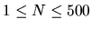

In this problem you are given N colorful cubes each having a distinct
weight. Each face of a cube is colored with one color. Your job is to build a
tower using the cubes you have subject to the following restrictions:
- Never put a heavier cube on a lighter one.
- The bottom face of every
cube (except the bottom cube, which is lying on the floor) must have the same
color as the top face of the cube below it.
- Construct the tallest tower possible.
The input may contain multiple test cases. The first line of each test case contains
an integer N (
)
indicating the number of cubes you are given. The ith (
 )
of the next N lines contains the description of the ith cube. A cube
is described by giving the colors of its faces in the following order: front,
back, left, right, top and bottom face. For your convenience colors are
identified by integers in the range 1 to 100. You may assume that cubes are
given in the increasing order of their weights, that is, cube 1 is the
lightest and cube N is the heaviest.
)
of the next N lines contains the description of the ith cube. A cube
is described by giving the colors of its faces in the following order: front,
back, left, right, top and bottom face. For your convenience colors are
identified by integers in the range 1 to 100. You may assume that cubes are
given in the increasing order of their weights, that is, cube 1 is the
lightest and cube N is the heaviest.
The input terminates with a value 0 for N.
For each test case in the input first print the test case number on a
separate line as shown in the sample output. On the next line print the number
of cubes in the tallest tower you have built. From the next line describe the
cubes in your tower from top to bottom with one description per line. Each
description contains an integer (giving the serial number of this cube in the
input) followed by a single whitespace character and then the identification
string (front, back, left, right, top or bottom) of the top face of the cube
in the tower. Note that there may be multiple solutions and any one of them is
acceptable.
Print a blank line between two successive test cases.
3
1 2 2 2 1 2
3 3 3 3 3 3
3 2 1 1 1 1
10
1 5 10 3 6 5
2 6 7 3 6 9
5 7 3 2 1 9
1 3 3 5 8 10
6 6 2 2 4 4
1 2 3 4 5 6
10 9 8 7 6 5
6 1 2 3 4 7
1 2 3 3 2 1
3 2 1 1 2 3
0
Case #1
2
2 front
3 front
Case #2
8
1 bottom
2 back
3 right
4 left
6 top
8 front
9 front
10 top
Miguel Revilla
2000-12-28